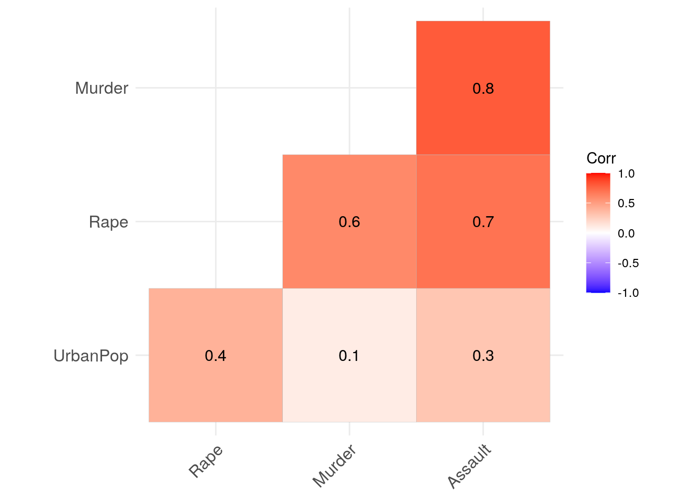
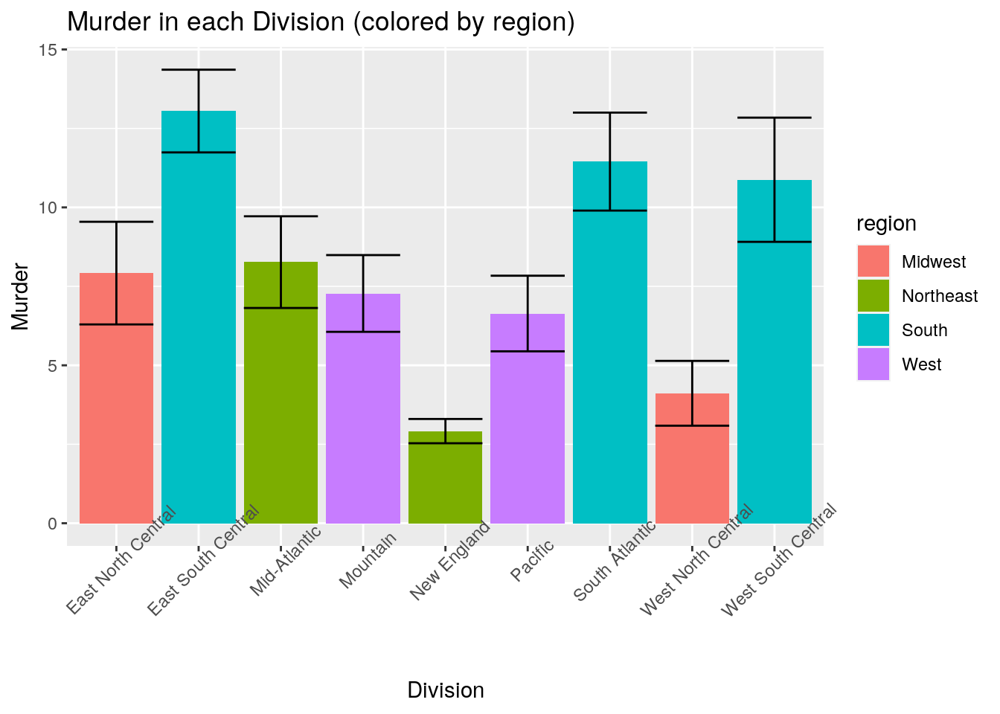
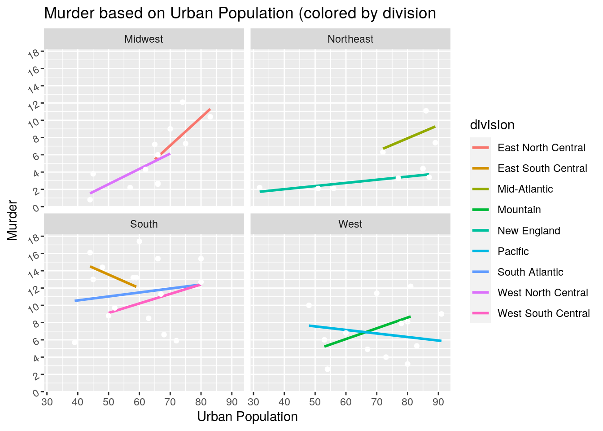
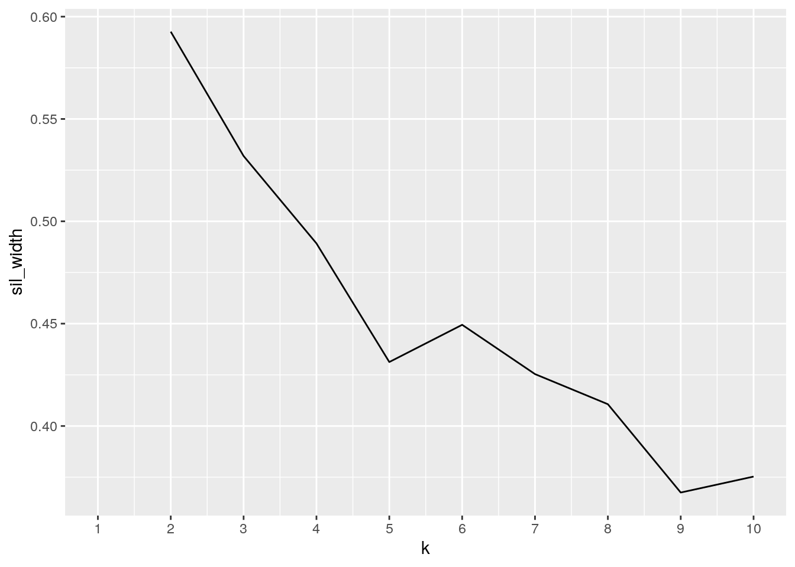
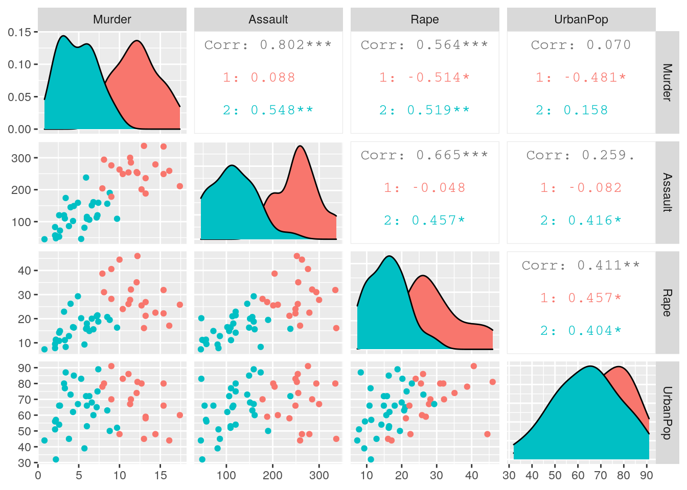
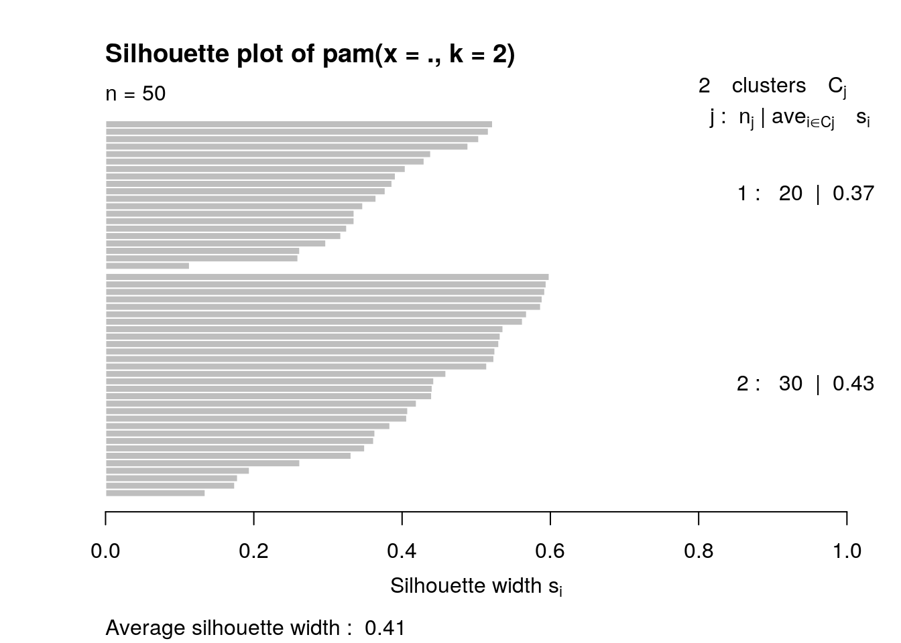

The data sets I chose were "USArrests" and "state_info." The sets were acquired via the "fivethirtyeight" package in RStudio using install.packages("fivethirtyeight"). USArrests gives statistics of crime rates in each state. The variables include murder, assault, and rape which are per 100,000 and UrbanPop which is the percent urban population per state. The state_info dataset gives each state, the states abbreviation, division, and region. I chose these data sets, because the United States is experiencing an increase in violence as of recent years. In this data analysis, I expect to see the relationships between regions and divisions and the number of murders and assaults.
library(fivethirtyeight)
data("USArrests")
head(USArrests)## Murder Assault UrbanPop Rape
## Alabama 13.2 236 58 21.2
## Alaska 10.0 263 48 44.5
## Arizona 8.1 294 80 31.0
## Arkansas 8.8 190 50 19.5
## California 9.0 276 91 40.6
## Colorado 7.9 204 78 38.7data("state_info")
head(state_info)## state state_abbrev division region
## 1 Alabama AL East South Central South
## 2 Alaska AK Pacific West
## 3 Arizona AZ Mountain West
## 4 Arkansas AR West South Central South
## 5 California CA Pacific West
## 6 Colorado CO Mountain Westlibrary(dplyr)
USArrests <- tibble::rownames_to_column(USArrests,
var = "state")
mydata <- inner_join(USArrests, state_info, by = "state")I chose to do an inner join, because District of Columbia was included as a state in the state_info dataset making the state_info set have 51 states instead of 50 like USArrests. However, there was no corresponding data in the USArrests dataset. An inner join drops any row in either dataset without a match and keeps only the rows with a match in both sets without introducing any Nas. This could possibly impact how crime rate in each region is accurately depicted, since it is missing data from a region in the South.
library(tidyr)
tidydata <- mydata %>% pivot_wider(names_from = region,
values_from = region)
glimpse(tidydata)## Rows: 50
## Columns: 11
## $ state <chr> "Alabama", "Alaska", "Arizona", "Arkansas", "California"…
## $ Murder <dbl> 13.2, 10.0, 8.1, 8.8, 9.0, 7.9, 3.3, 5.9, 15.4, 17.4, 5.…
## $ Assault <int> 236, 263, 294, 190, 276, 204, 110, 238, 335, 211, 46, 12…
## $ UrbanPop <int> 58, 48, 80, 50, 91, 78, 77, 72, 80, 60, 83, 54, 83, 65, …
## $ Rape <dbl> 21.2, 44.5, 31.0, 19.5, 40.6, 38.7, 11.1, 15.8, 31.9, 25…
## $ state_abbrev <chr> "AL", "AK", "AZ", "AR", "CA", "CO", "CT", "DE", "FL", "G…
## $ division <chr> "East South Central", "Pacific", "Mountain", "West South…
## $ South <chr> "South", NA, NA, "South", NA, NA, NA, "South", "South", …
## $ West <chr> NA, "West", "West", NA, "West", "West", NA, NA, NA, NA, …
## $ Northeast <chr> NA, NA, NA, NA, NA, NA, "Northeast", NA, NA, NA, NA, NA,…
## $ Midwest <chr> NA, NA, NA, NA, NA, NA, NA, NA, NA, NA, NA, NA, "Midwest…I decided to pivot_wider first, to see each region individually, however, it seemed unnecessary. Therefore, I decided to use my original data joined set for the remainder of the project.
mydata %>% filter(Assault > median(Assault)) %>% select(state,
Assault, region) %>% arrange(Assault)## state Assault region
## 1 Wyoming 161 West
## 2 Rhode Island 174 Northeast
## 3 Missouri 178 Midwest
## 4 Tennessee 188 South
## 5 Arkansas 190 South
## 6 Texas 201 South
## 7 Colorado 204 West
## 8 Georgia 211 South
## 9 Alabama 236 South
## 10 Delaware 238 South
## 11 Illinois 249 Midwest
## 12 Louisiana 249 South
## 13 Nevada 252 West
## 14 New York 254 Northeast
## 15 Michigan 255 Midwest
## 16 Mississippi 259 South
## 17 Alaska 263 West
## 18 California 276 West
## 19 South Carolina 279 South
## 20 New Mexico 285 West
## 21 Arizona 294 West
## 22 Maryland 300 South
## 23 Florida 335 South
## 24 North Carolina 337 Southmydata %>% mutate(avg_assaults_per_pop = (1e+05/Assault)/(UrbanPop/100))## state Murder Assault UrbanPop Rape state_abbrev division
## 1 Alabama 13.2 236 58 21.2 AL East South Central
## 2 Alaska 10.0 263 48 44.5 AK Pacific
## 3 Arizona 8.1 294 80 31.0 AZ Mountain
## 4 Arkansas 8.8 190 50 19.5 AR West South Central
## 5 California 9.0 276 91 40.6 CA Pacific
## 6 Colorado 7.9 204 78 38.7 CO Mountain
## 7 Connecticut 3.3 110 77 11.1 CT New England
## 8 Delaware 5.9 238 72 15.8 DE South Atlantic
## 9 Florida 15.4 335 80 31.9 FL South Atlantic
## 10 Georgia 17.4 211 60 25.8 GA South Atlantic
## 11 Hawaii 5.3 46 83 20.2 HI Pacific
## region avg_assaults_per_pop
## 1 South 730.5669
## 2 West 792.1420
## 3 West 425.1701
## 4 South 1052.6316
## 5 West 398.1526
## 6 West 628.4565
## 7 Northeast 1180.6375
## 8 South 583.5668
## 9 South 373.1343
## 10 South 789.8894
## 11 West 2619.1723
## [ reached 'max' / getOption("max.print") -- omitted 39 rows ]mydata %>% group_by(region) %>% summarize(mean_assault = mean(Assault,
na.rm = T), sd_assault = sd(Assault, na.rm = T))## # A tibble: 4 x 3
## region mean_assault sd_assault
## <chr> <dbl> <dbl>
## 1 Midwest 120. 71.5
## 2 Northeast 127. 64.9
## 3 South 220 74.2
## 4 West 187. 80.3I installed install.packages("kableExtra") to create tables for each summary.
library(kableExtra)
mydata %>% summarize(mean_assault = mean(Assault),
sd_assault = sd(Assault), var_assault = var(Assault),
min_assault = min(Assault), max_assault = max(Assault),
mean_murder = mean(Murder), sd_murder = sd(Murder),
var_murder = var(Murder), min_murder = min(Murder),
max_murder = max(Murder), mean_urban = mean(UrbanPop),
sd_urban = sd(UrbanPop), var_urban = var(UrbanPop),
min_urban = min(UrbanPop), max_urban = max(UrbanPop),
mean_rape = mean(Rape), sd_rape = sd(Rape), var_rape = var(Rape),
min_rape = min(Rape), max_rape = max(Rape)) %>%
kbl() %>% kable_classic(full_width = F, html_font = "Cambria")| mean_assault | sd_assault | var_assault | min_assault | max_assault | mean_murder | sd_murder | var_murder | min_murder | max_murder | mean_urban | sd_urban | var_urban | min_urban | max_urban | mean_rape | sd_rape | var_rape | min_rape | max_rape |
|---|---|---|---|---|---|---|---|---|---|---|---|---|---|---|---|---|---|---|---|
| 170.76 | 83.33766 | 6945.166 | 45 | 337 | 7.788 | 4.35551 | 18.97047 | 0.8 | 17.4 | 65.54 | 14.47476 | 209.5188 | 32 | 91 | 21.232 | 9.366385 | 87.72916 | 7.3 | 46 |
library(kableExtra)
mydata %>% group_by(region) %>% summarize(mean_assault = mean(Assault),
sd_assault = sd(Assault), var_assault = var(Assault),
min_assault = min(Assault), max_assault = max(Assault),
mean_murder = mean(Murder), sd_murder = sd(Murder),
var_murder = var(Murder), min_murder = min(Murder),
max_murder = max(Murder), mean_urban = mean(UrbanPop),
sd_urban = sd(UrbanPop), var_urban = var(UrbanPop),
min_urban = min(UrbanPop), max_urban = max(UrbanPop),
mean_rape = mean(Rape), sd_rape = sd(Rape), var_rape = var(Rape),
min_rape = min(Rape), max_rape = max(Rape)) %>%
kbl() %>% kable_classic(full_width = F, html_font = "Cambria")| region | mean_assault | sd_assault | var_assault | min_assault | max_assault | mean_murder | sd_murder | var_murder | min_murder | max_murder | mean_urban | sd_urban | var_urban | min_urban | max_urban | mean_rape | sd_rape | var_rape | min_rape | max_rape |
|---|---|---|---|---|---|---|---|---|---|---|---|---|---|---|---|---|---|---|---|---|
| Midwest | 120.3333 | 71.53935 | 5117.879 | 45 | 255 | 5.700000 | 3.558345 | 12.661818 | 0.8 | 12.1 | 64.41667 | 11.45313 | 131.1742 | 44 | 83 | 18.44167 | 7.981736 | 63.70811 | 7.3 | 35.1 |
| Northeast | 126.6667 | 64.85754 | 4206.500 | 48 | 254 | 4.700000 | 3.047950 | 9.290000 | 2.1 | 11.1 | 70.55556 | 19.94437 | 397.7778 | 32 | 89 | 13.77778 | 5.942806 | 35.31694 | 7.8 | 26.1 |
| South | 220.0000 | 74.20782 | 5506.800 | 81 | 337 | 11.706250 | 3.760934 | 14.144625 | 5.7 | 17.4 | 59.43750 | 12.46846 | 155.4625 | 39 | 80 | 21.16250 | 5.627536 | 31.66917 | 9.3 | 31.9 |
| West | 187.2308 | 80.32761 | 6452.526 | 46 | 294 | 7.030769 | 3.062511 | 9.378974 | 2.6 | 12.2 | 70.61538 | 13.34503 | 178.0897 | 48 | 91 | 29.05385 | 10.997774 | 120.95103 | 14.2 | 46.0 |
library(kableExtra)
mydata %>% group_by(region, division) %>% summarize(mean_assault = mean(Assault),
sd_assault = sd(Assault), var_assault = var(Assault),
min_assault = min(Assault), max_assault = max(Assault),
mean_murder = mean(Murder), sd_murder = sd(Murder),
var_murder = var(Murder), min_murder = min(Murder),
max_murder = max(Murder), mean_urban = mean(UrbanPop),
sd_urban = sd(UrbanPop), var_urban = var(UrbanPop),
min_urban = min(UrbanPop), max_urban = max(UrbanPop),
mean_rape = mean(Rape), sd_rape = sd(Rape), var_rape = var(Rape),
min_rape = min(Rape), max_rape = max(Rape)) %>%
kbl() %>% kable_classic(full_width = F, html_font = "Cambria")| region | division | mean_assault | sd_assault | var_assault | min_assault | max_assault | mean_murder | sd_murder | var_murder | min_murder | max_murder | mean_urban | sd_urban | var_urban | min_urban | max_urban | mean_rape | sd_rape | var_rape | min_rape | max_rape |
|---|---|---|---|---|---|---|---|---|---|---|---|---|---|---|---|---|---|---|---|---|---|
| Midwest | East North Central | 158.00000 | 89.69950 | 8046.000 | 53 | 255 | 7.920000 | 3.6341436 | 13.2070000 | 2.6 | 12.1 | 72.60000 | 7.368853 | 54.30000 | 65 | 83 | 22.46000 | 8.679747 | 75.33800 | 10.8 | 35.1 |
| Midwest | West North Central | 93.42857 | 44.63129 | 1991.952 | 45 | 178 | 4.114286 | 2.7144236 | 7.3680952 | 0.8 | 9.0 | 58.57143 | 10.422046 | 108.61905 | 44 | 70 | 15.57143 | 6.595886 | 43.50571 | 7.3 | 28.2 |
| Northeast | Mid-Atlantic | 173.00000 | 74.98667 | 5623.000 | 106 | 254 | 8.266667 | 2.5146239 | 6.3233333 | 6.3 | 11.1 | 82.33333 | 9.073772 | 82.33333 | 72 | 89 | 19.93333 | 5.685361 | 32.32333 | 14.9 | 26.1 |
| Northeast | New England | 103.50000 | 50.48861 | 2549.100 | 48 | 174 | 2.916667 | 0.9410986 | 0.8856667 | 2.1 | 4.4 | 64.66667 | 21.878452 | 478.66667 | 32 | 87 | 10.70000 | 3.078311 | 9.47600 | 7.8 | 16.3 |
| South | East South Central | 198.00000 | 66.29731 | 4395.333 | 109 | 259 | 13.050000 | 2.6185238 | 6.8566667 | 9.7 | 16.1 | 53.25000 | 6.898067 | 47.58333 | 44 | 59 | 20.37500 | 4.850687 | 23.52917 | 16.3 | 26.9 |
| South | South Atlantic | 242.12500 | 90.00069 | 8100.125 | 81 | 337 | 11.450000 | 4.3866681 | 19.2428571 | 5.7 | 17.4 | 59.25000 | 14.179966 | 201.07143 | 39 | 80 | 21.23750 | 7.347679 | 53.98839 | 9.3 | 31.9 |
| South | West South Central | 197.75000 | 40.34332 | 1627.583 | 151 | 249 | 10.875000 | 3.9322385 | 15.4625000 | 6.6 | 15.4 | 66.00000 | 12.328828 | 152.00000 | 50 | 80 | 21.80000 | 2.731300 | 7.46000 | 19.5 | 25.5 |
| West | Mountain | 193.12500 | 76.53652 | 5857.839 | 109 | 294 | 7.275000 | 3.4362563 | 11.8078571 | 2.6 | 12.2 | 69.50000 | 12.118463 | 146.85714 | 53 | 81 | 27.11250 | 11.727676 | 137.53839 | 14.2 | 46.0 |
| West | Pacific | 177.80000 | 94.47592 | 8925.700 | 46 | 276 | 6.640000 | 2.6763781 | 7.1630000 | 4.0 | 10.0 | 72.40000 | 16.456002 | 270.80000 | 48 | 91 | 32.16000 | 10.127339 | 102.56300 | 20.2 | 44.5 |
First, I used filter() to return assaults that were greater than the median number of assaults per state. I then used select() to choose the variables I wanted to look more closely at, which were state, assault, and region. Lastly, I arranged it by assault to sort the data from least-to-greatest by number of assaults per 100,000 people. I then found the number of assaults as a function of the urban population using mutate. In mutate(), I accounted for the number of assaults per 100000 by dividing 100000 by assaults, then divided that number by the percentage of urban population found by dividing the percent by 100. Using group_by() and summarize(), I found the mean number of assaults per each region. I further explored the data set by grouping by region and finding the mean and standard deviation of assaults. All numeric variables were summarized. Mean, standard deviation, variance, minimum and maximum were found for all numeric variables, renamed and put into a table using kable. Using the same summary statistics, I grouped by region which was also put into a table, then by both region and division. Each table was used and modified using kable to further organize the data.
library(ggcorrplot)
mapdata <- mydata[, c(2, 3, 4, 5)]
corr <- round(cor(mapdata), 1)
ggcorrplot(corr, hc.order = TRUE, type = "lower", lab = TRUE) I first created a new vector called "corr" in order to create the correlation heatmap. This included by 4 variables, murder, rape, assault, and urban population. I then used the ggcorrplot to create the correlation heatmap. This map shows how related each numeric variable is to one another. For example, assault and murder have a 0.8 correlation which is a very strong relationship with one another. This means assault and murder are likely to happen together. However, murder and urban population have the lowest correlation of 0.10. This implies that murder is mostly independent from the urban population.
ggplot(mydata, aes(x = division, y = Murder, fill = region)) +
geom_bar(stat = "summary", fun = mean) + geom_errorbar(stat = "summary",
fun.data = mean_se) + ggtitle("Murder in each Division (colored by region)") +
labs(y = "Murder", x = "Division") + theme(axis.text.x = element_text(angle = 45)) A bar graph was created to compare each divisions average number of murders. This was further separated by coloring the divisions by the region in which it belongs to. We can see that murders happen at a higher rate in Southern regions. The next highest murders happen in the West and are equally as likely to happen in both divisions. However, in both the Midwest and Northeast regions, divisions are very different and murders are more likely to happen in one more so than the other. For example for the Midwest region, murders occur more in East North Central vs the South Atlantic. The same goes for the Northeast, as East South Central has a greater murder rate than the Mountains. In terms of the graph itself, the labels were turned on the x-axis in order to fit in the spaces provided.
ggplot(data = mydata, aes(x = UrbanPop, y = Murder,
color = division)) + geom_smooth(method = "lm",
se = FALSE) + geom_point(color = "white") + ggtitle("Murder based on Urban Population (colored by division") +
labs(y = "Murder", x = "Urban Population") + scale_y_continuous(breaks = seq(0,
20, by = 2)) + theme(axis.text.y = element_text(angle = 30)) +
facet_wrap(~region) Murder was shown as a function of urban population. This was done by creating a scatterplot then using a linear regression model. Each division is shown as a different color. The divisions were then used in facet_wrap to separate each into varying regions.
As a function of urban population, we can see that the strongest linear predictor for murder is in the Midwest, since this region has the steepest line being the East North Central. As shown, the Midwest is the only region that is consistent with its linear predictions as both are positive. Both the West and South regions have divisions that urban population is not a reliable linear predictor for murder, as they have negative slopes. However, the Northeast does seem to also have a strong linear predictor as both are slightly increasing.
library(cluster)
pam_dat <- mydata %>% select(Murder, Assault, Rape,
UrbanPop)
sil_width <- vector()
for (i in 2:10) {
pam_fit <- pam(pam_dat, k = i)
sil_width[i] <- pam_fit$silinfo$avg.width
}
ggplot() + geom_line(aes(x = 1:10, y = sil_width)) +
scale_x_continuous(name = "k", breaks = 1:10) I picked k=2 because it had the largest silhouette width. This ensured the best fit for the clusters.
pam1 <- mydata %>% select_if(is.numeric) %>% scale %>%
pam(k = 2)
pam1## Medoids:
## ID Murder Assault UrbanPop Rape
## [1,] 31 0.8292944 1.3708088 0.3081225 1.1603196
## [2,] 27 -0.8008247 -0.8250772 -0.2445636 -0.5052109
## Clustering vector:
## [1] 1 1 1 2 1 1 2 2 1 1 2 2 1 2 2 2 2 1 2 1 2 1 2 1 1 2 2 1 2 2 1 1 1 2 2 2 2 2
## [39] 2 1 2 1 1 2 2 2 2 2 2 2
## Objective function:
## build swap
## 1.441358 1.368969
##
## Available components:
## [1] "medoids" "id.med" "clustering" "objective" "isolation"
## [6] "clusinfo" "silinfo" "diss" "call" "data"I installed the following packages in order to use plotly: install.packages("devtools") install.packages("plotly) devtools::install_github("ropensci/plotly").
pamclust <- pam_dat %>% mutate(cluster = as.factor(pam1$clustering))
library(plotly)
pamclust %>% plot_ly(x = ~Murder, y = ~Assault, z = ~Rape,
color = ~cluster, type = "scatter3d", mode = "markers") %>%
layout(autosize = F, width = 900, height = 400)The 3D scatterplot visualizes murder, rape, and assault based on 4 variables.
library(GGally)
ggpairs(pamclust, columns = 1:4, aes(color = cluster))
The above plots visualize the correlations between each variable based on clusters of the 4 variables.
pamclust %>% group_by(cluster) %>% summarize_if(is.numeric,
mean, na.rm = T)## # A tibble: 2 x 5
## cluster Murder Assault Rape UrbanPop
## <fct> <dbl> <dbl> <dbl> <dbl>
## 1 1 12.2 255. 29.2 68.4
## 2 2 4.87 114. 15.9 63.6mydata %>% slice(pam1$id.med)## state Murder Assault UrbanPop Rape state_abbrev division
## 1 New Mexico 11.4 285 70 32.1 NM Mountain
## 2 Nebraska 4.3 102 62 16.5 NE West North Central
## region
## 1 West
## 2 MidwestI summarized the clusters by their means for each variable using group_by and summarize. I then found the final medoids with slice(). This shows that New Mexico and Nebraska are most representative for their respective clusters.
plot(pam1, which = 2)
The goodness of fit is relatively weak and could be artificial. This was found by using the average silhouette width of 0.41 and comparing it to the extablished values of goodness of fit.